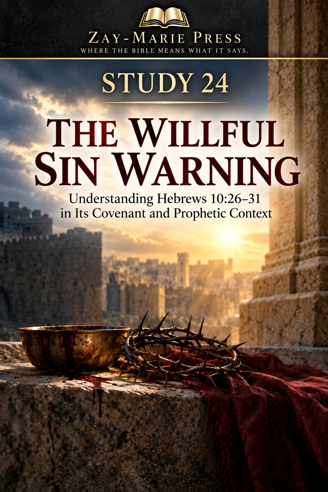
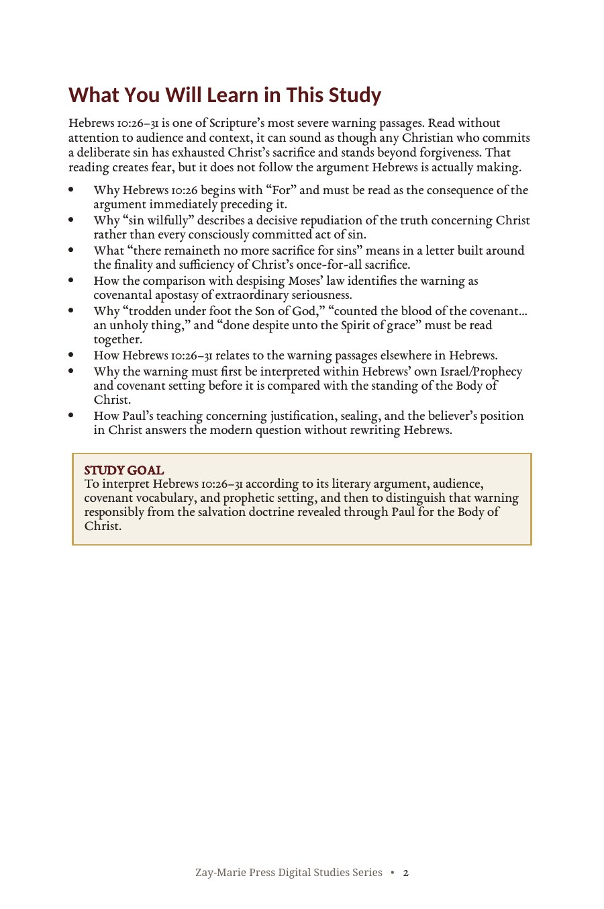
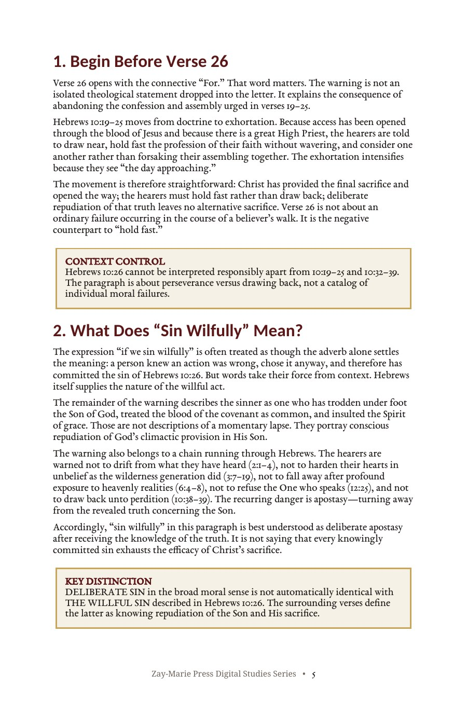
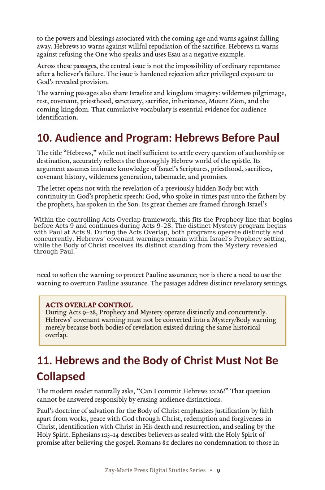
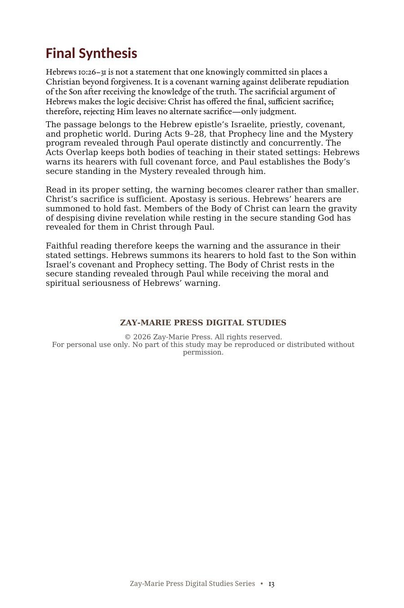

The Willful Sin Warning
Understanding Hebrews 10:26–31 in Its Covenant and Prophetic Context
A Careful Reading of Hebrews’ Severe Warning Passage
Hebrews 10:26–31 is among Scripture’s most severe warning passages. Read apart from its argument, it can sound as though any deliberate sin places a believer beyond forgiveness. This study follows Hebrews’ own context: the finality of Christ’s sacrifice, the call to hold fast, and the warning against deliberate repudiation of the Son.
It then identifies the passage’s covenant, Israelite, and Prophecy setting while preserving the distinct standing of the Body of Christ revealed through Paul. During Acts 9–28, Prophecy and Mystery operate distinctly and concurrently.
Read the Warning in Its Stated Setting
The warning in Hebrews 10 is not a detached statement about ordinary moral failure. Its language concerns a decisive rejection of the Son, His covenant blood, and the Spirit of grace after receiving the knowledge of the truth.
This study traces the argument before and after verse 26, the comparison with Moses, the recurring warning pattern in Hebrews, and the covenant setting that gives the passage its force. It preserves Hebrews’ full seriousness while distinguishing its audience and administration from Paul’s teaching concerning the Body of Christ.
Follow Hebrews’ Argument Before Drawing Conclusions
Begin Before Verse 26
Follow Hebrews 10:19–25 to see why the warning begins with “For” and how it relates to holding fast rather than drawing back.
What “Sin Wilfully” Describes
Examine the threefold description in Hebrews 10:29 to distinguish deliberate apostasy from every conscious act of sin.
No More Sacrifice for Sins
Trace Hebrews’ once-for-all sacrifice argument and see why rejecting Christ leaves no alternate sacrificial provision.
Moses, Judgment, and Covenant Responsibility
Study Hebrews 10:28–31 alongside Deuteronomy 32 to identify the judicial and covenantal force of the warning.
Hebrews’ Unified Warning Pattern
Compare the warning passages throughout Hebrews and identify their recurring concern: rejecting God’s revealed provision.
Hebrews and the Body of Christ
Read Hebrews in its covenant and Prophecy setting while recognizing the secure standing revealed through Paul for the Body of Christ.
Examine the Warning and Its Context for Yourself
Hebrews 10:19–39
The argument, exhortations, warning, and call to endurance surrounding verse 26.
Hebrews 2:1–4
A warning against neglecting the received message and so great salvation.
Hebrews 3:7–19
Israel’s wilderness unbelief as a warning against hardened hearts.
Hebrews 6:4–8
A related warning passage concerning profound exposure and falling away.
Hebrews 12:25–29
The summons not to refuse the One who speaks from heaven.
Deuteronomy 32:35–36
The covenant background invoked in Hebrews’ language of divine judgment.
Romans 5:1
Paul’s teaching concerning justification and peace with God.
Ephesians 1:13–14
The believer’s sealing with the Holy Spirit of promise after believing.
The Warning Is Not About Ordinary Failure
“‘Sin wilfully’ in this paragraph is best understood as deliberate apostasy after receiving the knowledge of the truth. It is not saying that every knowingly committed sin exhausts the efficacy of Christ’s sacrifice.”
Hebrews defines the offense through contempt for the Son, profaning the blood of the covenant, and insulting the Spirit of grace.
Preview the Study Before You Purchase
Click any page to enlarge it for reading.
{kind=link}

What You Will Learn in This Study
Begin with the governing questions and reading controls that guide the study.
{kind=link}

What “Sin Wilfully” Describes
See why Hebrews’ surrounding language identifies a decisive repudiation of the Son.
{kind=link}

Audience and Program: Hebrews Before Paul
Read the warning within Hebrews’ Israelite, covenant, and Prophecy setting.
{kind=link}

Final Synthesis
Bring Hebrews’ warning and the Body’s secure standing into their stated settings.
A Focused Study Built for
Understanding and Teaching
Context Before Verse 26
Read the warning as the consequence of Hebrews 10:19–25 and its call to hold fast.
Willful Sin Defined
Let Hebrews 10:29 explain the character of the sin rather than treating every deliberate failure as identical.
Christ’s Final Sacrifice
Trace Hebrews’ argument for the once-for-all sufficiency of Christ’s offering.
Covenant Warning Background
Study the Moses comparison and Deuteronomy 32 behind the warning’s judicial language.
Related Hebrews Warnings
Compare the letter’s recurring warnings and see the unified concern they address.
Audience and Setting
Identify Hebrews’ Israelite, priestly, covenant, and Prophecy world before applying the passage.
Pauline Standing
Recognize the Body of Christ’s distinct standing from the Mystery revealed through Paul.
Teaching and Discussion Tools
Use the study summary, key distinctions, Scripture tracing, questions, and guided further study for personal or group instruction.
The Willful Sin Warning
Digital PDF · For personal use
Want More Than a Focused Study?
Digital Studies examine particular biblical subjects and difficult passages. The 40-lesson Biblical Hermeneutics course teaches a complete, repeatable method for establishing meaning in context, determining proper assignment, and making responsible application.